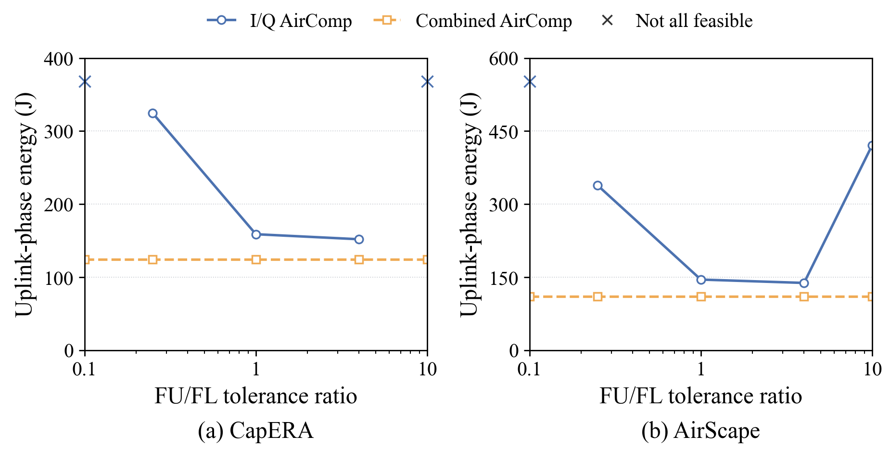
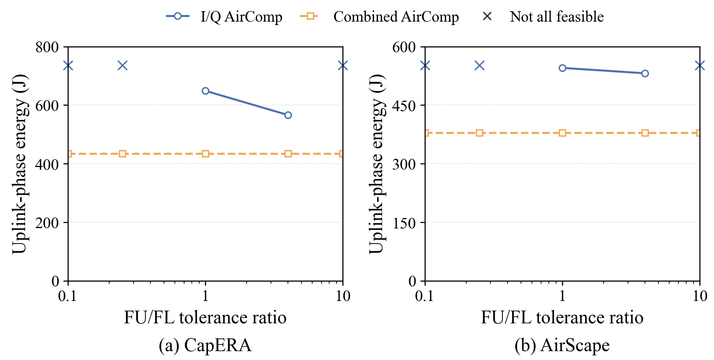
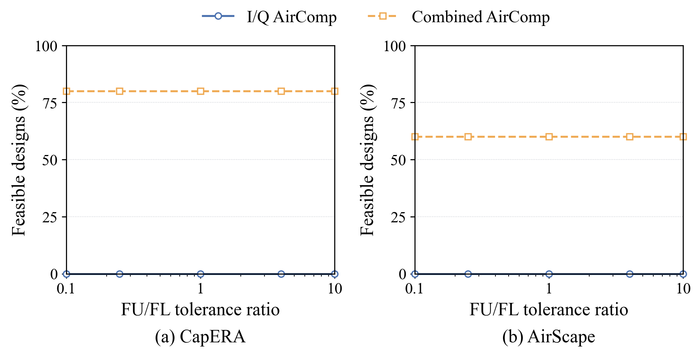
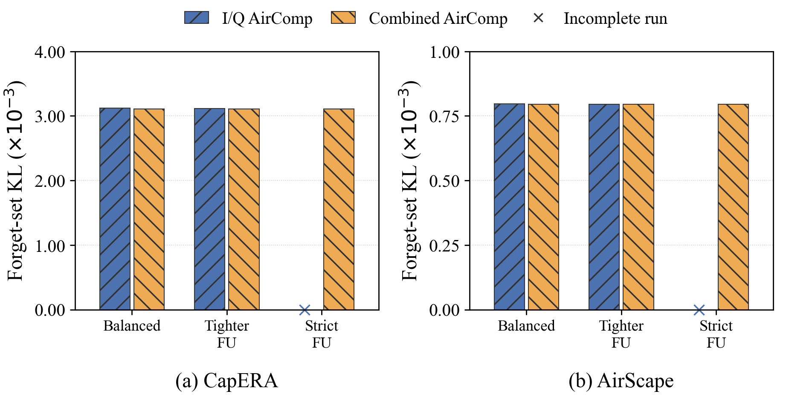
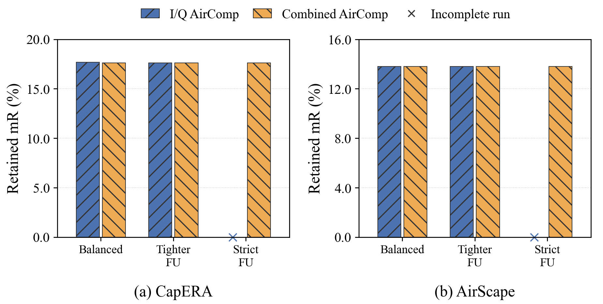
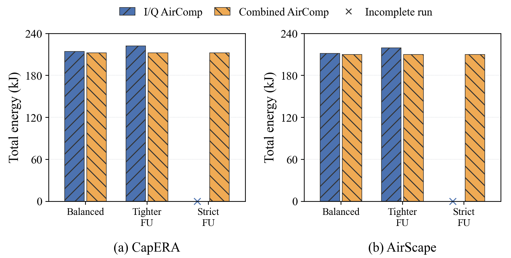

FU/FL 상대 허용 오차 비율을1에서0.25로 낮춘 조건: I/Q minus Combined. KL·에너지·지연은 증가할수록 불리합니다.
| Dataset | mR 변화 | KL 변화 | 에너지 변화 | 지연 변화 |
|---|---|---|---|---|
| CapERA | +0.00000%p | +0.119% | +4.490% | +4.490% |
| AirScape | +0.00000%p | +0.158% | +4.547% | +4.547% |
Combined 대 I/Q 추가 진단 결과 기존 실험은 FL/FU 개별 C8 제약이45개 joint round 모두에서 경계까지 활성화되지 않고, 합산 오차 C9 제약이 자원을 결정했다. 따라서 개별 오차 제어의 효용을 확인하기 어려운 조건이었다. FU/FL 상대 허용 오차 비율을1에서0.25로 바꾸어 추가200 FL round/225 FU step 실험을 수행했다. 총 MSE 예산과 C9 예산은 유지했다. I/Q의 FU 개별 제약이 두 데이터셋 모두45개 joint round 전부에서 활성화되었다. CapERA: I/Q와 Combined mR 차이+0.00000%p; I/Q matched KL은0.119% 증가, 에너지는4.490% 증가, 지연은4.490% 증가했다. AirScape: I/Q와 Combined mR 차이+0.00000%p; I/Q matched KL은0.158% 증가, 에너지는4.547% 증가, 지연은4.547% 증가했다. 같은 최종 수신 오차를 갖도록 구성한 Combined 대조군은 CapERA와 AirScape 모두 I/Q의 최종 파라미터를 비트 단위까지 동일하게 재현했다. 모든360개 전송에서 per-device/block RF 전력이 I/Q보다 크지 않음을 확인했다. 이 대조군은 수학적 동등성을 검증하는 진단이며 별도의 최적화된 실용 알고리즘을 주장하지 않는다. 동일 최종 잡음을 의도적으로 공유했으므로 모델 일치는 통제 조건의 결과다. 별도의 복소 송수신 파형 계산으로 실제 Combined 단일 신호가 이 잡음 통계와 전력 조건을 구현할 수 있음을10개 실제 업데이트에서 검산했다. 이 결과를 독립적인 성능 승리로 해석하지 않는다. 개별 C8 정확도 요구를 Combined가 충족했다고 해석하면 안 된다. 단일 합산 수신값에서는 FL/FU 별 추정 오차가 정의되지 않는다. 이 검증은 최종적으로 FL+FU를 선형 합산하는 현재 모델의 합산 오차와 모델 성능에 관한 것이다. 현재의 완전한 위상 보상, 독립 Gaussian 잡음, 최종 선형 합산 조건에서는 무선 I/Q 분리만으로 일관된 mR/KL 이득을 확인하지 못했다. 개별 오차 한도를 강화한 것만으로는 모델 성능 개선으로 이어지지 않았다. 단일 development seed 결과로 통계적 우위를 주장하지 않는다. 비율0.1 및 -12dB 스트레스 조건의 미완료 결과도 모두 보존했다. 실제 VLM 업데이트10개에서 무선 설계300개를 비교했으며, no-feasible105개 중81개는 솔버와 별개로 계산한 필요조건 하한에서도 불가능했다. 나머지24개는 이 하한만으로 불가능성을 확정하지 않았다. 41/42: 기본 및-6dB 채널에서의 무선 에너지 민감도. 43:-12dB 조건의 설계 성공 비율. 44/45/46: 동일200라운드의 KL/mR/에너지 비교. X는 미완료를 뜻하며0 성능 또는0 비용으로 해석하지 않는다. 세부 수치:endpoints.csv, snapshot_sweep.csv, constraint_activity.csv. 수학적 조건:sum_only_equivalence.txt. 사전 조건과 추가 실행의 이유:protocol.json, moderate_followup_protocol.json.






I/Q diagnostic: all outcomes
Original C8 bounds were slack during every joint update while C9 was active. The new full runs tighten the FU relative tolerance by10x while keeping total MSE and C9 targets fixed, and then additionally reduce channel power by12 dB. Both methods retain identical learning objectives, data, power caps and resource budgets.
After the10x-tight I/Q runs could not find a feasible radio design, a disclosed4x-tight follow-up (ratio0.25) was registered for both methods and both datasets. This setting was chosen because all ten registered regional snapshots were feasible at that ratio, before observing its final mR/KL. The earlier incomplete outcomes remain in this report.
Both original I/Q models were reproduced bitwise. A Combined construction with identical final-noise covariance reproduced BOTH I/Q final tensors bitwise, with no greater per-device/block RF power across360 transactions.
The mapped end-to-end run deliberately shares the final Gaussian update, so the tensor equality is a controlled consequence, not an independent quality win. A separate complex-waveform calculation on all ten stored snapshots verifies the same single-stream construction, random channel phases, per-user block-energy inequality, and Monte Carlo noise variance. See mapped_waveform_check.json.
For each block, let v_L=nu/x_L and v_U=nu/x_U be the two I/Q noise variances. Set x_C=nu/(v_L+v_U), omitting inactive branches. Then the Combined noise variance equals v_L+v_U. Weighted Cauchy-Schwarz gives
x_C ||l_u+u_u||^2 <= x_L ||l_u||^2 + x_U ||u_u||^2.
The channel factor1/|h_u|^2 is common. Thus every device/block has no greater RF energy and, at the same symbol count, no greater transmit power. The final-update noise covariance and the sum-based C9 distortion are unchanged. Both models apply the same final update when their Gaussian noise is coupled. The mapped control uses this construction; it is not a new optimized deployment algorithm.
This argument applies to the present real local updates, perfect phase inversion, AWGN, block-isotropic independent I/Q noise, and a final linear sum. It does not provide separate FL/FU estimates for Combined, nor assert equivalence for nonlinear receiver processing, unknown phase, or different information constraints. Individual C8 limits are additional requirements for I/Q; they are not observable task errors of a one-stream combined estimate.
The300 frozen-update designs use five predetermined region snapshots per dataset, three channel offsets and five tolerance ratios. These are resource sensitivity results, not new training seeds. All solver failures are retained. They do not establish impossibility of another feasible optimizer solution.
A separate solver-independent audit uses necessary lower bounds on RF energy and required symbol expansion. It can prove some failed grid conditions infeasible under the registered limits; unresolved failures remain only solver failures. See bounds_summary.json and feasibility_bounds.json. No necessary lower bound was violated by a reported feasible point.
Full-run bars contain only completed200 FL round/225 FU cycle endpoints. Missing endpoints are explicitly marked. Same common and policy-matched retained-only references are used for all completed methods. Neither is a training teacher.
Active energy covers computation, transmission, broadcast, circuits and hovering after the common20-round warm start. Fixed travel and the common warm start are excluded, as in experiment A. No flight-energy or hardware-runtime inference is made.
No favorable condition is selected for promotion. These are single-training-seed diagnostics; I/Q superiority is not assumed. Component separation by itself does not use nonlinear FL/FU interactions at the head.
Endpoints:
{'dataset': 'CapERA', 'case': 'baseline', 'mode': 'combined', 'source': 'results/combined_iq_experiment_a_20261030/combined/cases/baseline/capera_seed0/adaptive_retrieval_fu', 'status': 'completed', 'mR': 17.617187499999996, 'loss': 5.284457929480891, 'common_KL': 0.009475286644223724, 'matched_KL': 0.003109719771705285, 'energy_kJ': 212.37074328457757, 'delay_s': 125.89726690166769, 'RF_energy_j': 0.7021397520271377}
{'dataset': 'CapERA', 'case': 'baseline', 'mode': 'iq', 'source': 'results/combined_iq_experiment_a_20261030/iq/cases/baseline/capera_seed0/adaptive_retrieval_fu', 'status': 'completed', 'mR': 17.682291666666668, 'loss': 5.28429984479345, 'common_KL': 0.009488043146491052, 'matched_KL': 0.003118142434075015, 'energy_kJ': 214.3398933340308, 'delay_s': 127.06462690166761, 'RF_energy_j': 0.8820906606956836}
{'dataset': 'CapERA', 'case': 'balanced_replay', 'mode': 'iq', 'source': 'results/combined_iq_diagnostic_v1_20261030/balanced_replay/iq/cases/baseline/capera_seed0/adaptive_retrieval_fu', 'status': 'completed', 'mR': 17.682291666666668, 'loss': 5.28429984479345, 'common_KL': 0.009488043146491052, 'matched_KL': 0.003118142434075015, 'energy_kJ': 214.3398933340308, 'delay_s': 127.06462690166761, 'RF_energy_j': 0.8820906606956836}
{'dataset': 'CapERA', 'case': 'mapped_noise_control', 'mode': 'combined', 'source': 'results/combined_iq_diagnostic_v1_20261030/mapped_noise_control/combined/cases/baseline/capera_seed0/adaptive_retrieval_fu', 'status': 'completed', 'mR': 17.682291666666668, 'loss': 5.28429984479345, 'common_KL': 0.009488043146491052, 'matched_KL': 0.003118142434075015, 'energy_kJ': 214.33938065381, 'delay_s': 127.06462690166761, 'RF_energy_j': 0.702652583419899}
{'dataset': 'CapERA', 'case': 'fu_strict', 'mode': 'combined', 'source': 'results/combined_iq_diagnostic_v1_20261030/fu_strict/combined/cases/baseline/capera_seed0/adaptive_retrieval_fu', 'status': 'completed', 'mR': 17.617187499999996, 'loss': 5.284457944425267, 'common_KL': 0.009475286354720279, 'matched_KL': 0.0031097195913702457, 'energy_kJ': 212.37074328458306, 'delay_s': 125.89726690166769, 'RF_energy_j': 0.7021397539515498}
{'dataset': 'CapERA', 'case': 'fu_strict', 'mode': 'iq', 'source': 'results/combined_iq_diagnostic_v1_20261030/fu_strict/iq/cases/baseline/capera_seed0/adaptive_retrieval_fu', 'status': 'incomplete_no_feasible_radio_design', 'outcome': {'case': 'baseline', 'dataset': 'CapERA', 'method': 'adaptive_retrieval_fu', 'status': 'incomplete_no_feasible_radio_design', 'wall_seconds': 1.9254109859466553}, 'last_completed_FL_round': 25}
{'dataset': 'CapERA', 'case': 'fu_strict_weak', 'mode': 'combined', 'source': 'results/combined_iq_diagnostic_v1_20261030/fu_strict_weak/combined/cases/baseline/capera_seed0/adaptive_retrieval_fu', 'status': 'incomplete_no_feasible_radio_design', 'outcome': {'case': 'baseline', 'dataset': 'CapERA', 'method': 'adaptive_retrieval_fu', 'status': 'incomplete_no_feasible_radio_design', 'wall_seconds': 35.12294888496399}, 'last_completed_FL_round': 133}
{'dataset': 'CapERA', 'case': 'fu_strict_weak', 'mode': 'iq', 'source': 'results/combined_iq_diagnostic_v1_20261030/fu_strict_weak/iq/cases/baseline/capera_seed0/adaptive_retrieval_fu', 'status': 'incomplete_no_feasible_radio_design', 'outcome': {'case': 'baseline', 'dataset': 'CapERA', 'method': 'adaptive_retrieval_fu', 'status': 'incomplete_no_feasible_radio_design', 'wall_seconds': 2.0620615482330322}, 'last_completed_FL_round': 25}
{'dataset': 'CapERA', 'case': 'fu_moderate', 'mode': 'combined', 'source': 'results/combined_iq_diagnostic_v2_20261030/fu_moderate/combined/cases/baseline/capera_seed0/adaptive_retrieval_fu', 'status': 'completed', 'mR': 17.617187499999996, 'loss': 5.284457947504446, 'common_KL': 0.009475286816338966, 'matched_KL': 0.0031097198626747927, 'energy_kJ': 212.3707432845844, 'delay_s': 125.89726690166769, 'RF_energy_j': 0.7021397544198215}
{'dataset': 'CapERA', 'case': 'fu_moderate', 'mode': 'iq', 'source': 'results/combined_iq_diagnostic_v2_20261030/fu_moderate/iq/cases/baseline/capera_seed0/adaptive_retrieval_fu', 'status': 'completed', 'mR': 17.617187499999996, 'loss': 5.284389563945369, 'common_KL': 0.009481088780102792, 'matched_KL': 0.0031134119889812593, 'energy_kJ': 221.9057727686963, 'delay_s': 131.54974690166793, 'RF_energy_j': 1.6426639934465752}
{'dataset': 'AirScape', 'case': 'baseline', 'mode': 'combined', 'source': 'results/combined_iq_experiment_a_20261030/combined/cases/baseline/airscape_seed0/adaptive_retrieval_fu', 'status': 'completed', 'mR': 13.802083333333334, 'loss': 5.532037391421615, 'common_KL': 0.0031906978579880306, 'matched_KL': 0.0007943126876525159, 'energy_kJ': 209.69932278066148, 'delay_s': 124.3133247529171, 'RF_energy_j': 0.7315838519958782}
{'dataset': 'AirScape', 'case': 'baseline', 'mode': 'iq', 'source': 'results/combined_iq_experiment_a_20261030/iq/cases/baseline/airscape_seed0/adaptive_retrieval_fu', 'status': 'completed', 'mR': 13.802083333333334, 'loss': 5.531981304594845, 'common_KL': 0.0031964175578191967, 'matched_KL': 0.0007972506529179002, 'energy_kJ': 211.39219209659666, 'delay_s': 125.31684475291709, 'RF_energy_j': 0.9181996293069569}
{'dataset': 'AirScape', 'case': 'balanced_replay', 'mode': 'iq', 'source': 'results/combined_iq_diagnostic_v1_20261030/balanced_replay/iq/cases/baseline/airscape_seed0/adaptive_retrieval_fu', 'status': 'completed', 'mR': 13.802083333333334, 'loss': 5.531981304594845, 'common_KL': 0.0031964175578191967, 'matched_KL': 0.0007972506529179002, 'energy_kJ': 211.39219209659666, 'delay_s': 125.31684475291709, 'RF_energy_j': 0.9181996293069569}
{'dataset': 'AirScape', 'case': 'mapped_noise_control', 'mode': 'combined', 'source': 'results/combined_iq_diagnostic_v1_20261030/mapped_noise_control/combined/cases/baseline/airscape_seed0/adaptive_retrieval_fu', 'status': 'completed', 'mR': 13.802083333333334, 'loss': 5.531981304594845, 'common_KL': 0.0031964175578191967, 'matched_KL': 0.0007972506529179002, 'energy_kJ': 211.3916631076375, 'delay_s': 125.31684475291709, 'RF_energy_j': 0.7330534935883082}
{'dataset': 'AirScape', 'case': 'fu_strict', 'mode': 'combined', 'source': 'results/combined_iq_diagnostic_v1_20261030/fu_strict/combined/cases/baseline/airscape_seed0/adaptive_retrieval_fu', 'status': 'completed', 'mR': 13.802083333333334, 'loss': 5.532037391806032, 'common_KL': 0.0031906974689158395, 'matched_KL': 0.0007943124645368968, 'energy_kJ': 209.69932278066537, 'delay_s': 124.3133247529171, 'RF_energy_j': 0.7315838533510011}
{'dataset': 'AirScape', 'case': 'fu_strict', 'mode': 'iq', 'source': 'results/combined_iq_diagnostic_v1_20261030/fu_strict/iq/cases/baseline/airscape_seed0/adaptive_retrieval_fu', 'status': 'incomplete_no_feasible_radio_design', 'outcome': {'case': 'baseline', 'dataset': 'AirScape', 'method': 'adaptive_retrieval_fu', 'status': 'incomplete_no_feasible_radio_design', 'wall_seconds': 1.5120375156402588}, 'last_completed_FL_round': 25}
{'dataset': 'AirScape', 'case': 'fu_strict_weak', 'mode': 'combined', 'source': 'results/combined_iq_diagnostic_v1_20261030/fu_strict_weak/combined/cases/baseline/airscape_seed0/adaptive_retrieval_fu', 'status': 'incomplete_no_feasible_radio_design', 'outcome': {'case': 'baseline', 'dataset': 'AirScape', 'method': 'adaptive_retrieval_fu', 'status': 'incomplete_no_feasible_radio_design', 'wall_seconds': 2.532277822494507}, 'last_completed_FL_round': 27}
{'dataset': 'AirScape', 'case': 'fu_strict_weak', 'mode': 'iq', 'source': 'results/combined_iq_diagnostic_v1_20261030/fu_strict_weak/iq/cases/baseline/airscape_seed0/adaptive_retrieval_fu', 'status': 'incomplete_no_feasible_radio_design', 'outcome': {'case': 'baseline', 'dataset': 'AirScape', 'method': 'adaptive_retrieval_fu', 'status': 'incomplete_no_feasible_radio_design', 'wall_seconds': 1.7771482467651367}, 'last_completed_FL_round': 25}
{'dataset': 'AirScape', 'case': 'fu_moderate', 'mode': 'combined', 'source': 'results/combined_iq_diagnostic_v2_20261030/fu_moderate/combined/cases/baseline/airscape_seed0/adaptive_retrieval_fu', 'status': 'completed', 'mR': 13.802083333333334, 'loss': 5.532037414760261, 'common_KL': 0.0031906981408657735, 'matched_KL': 0.0007943127488893115, 'energy_kJ': 209.69932278067, 'delay_s': 124.3133247529171, 'RF_energy_j': 0.7315838549850046}
{'dataset': 'AirScape', 'case': 'fu_moderate', 'mode': 'iq', 'source': 'results/combined_iq_diagnostic_v2_20261030/fu_moderate/iq/cases/baseline/airscape_seed0/adaptive_retrieval_fu', 'status': 'completed', 'mR': 13.802083333333334, 'loss': 5.532015600084133, 'common_KL': 0.0031929006850779946, 'matched_KL': 0.0007955648177287718, 'energy_kJ': 219.2346790752494, 'delay_s': 129.96580475291734, 'RF_energy_j': 1.786491757632958}